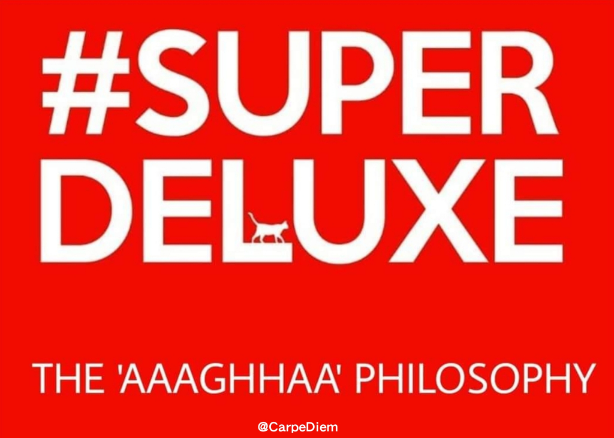
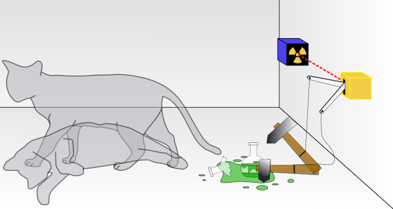
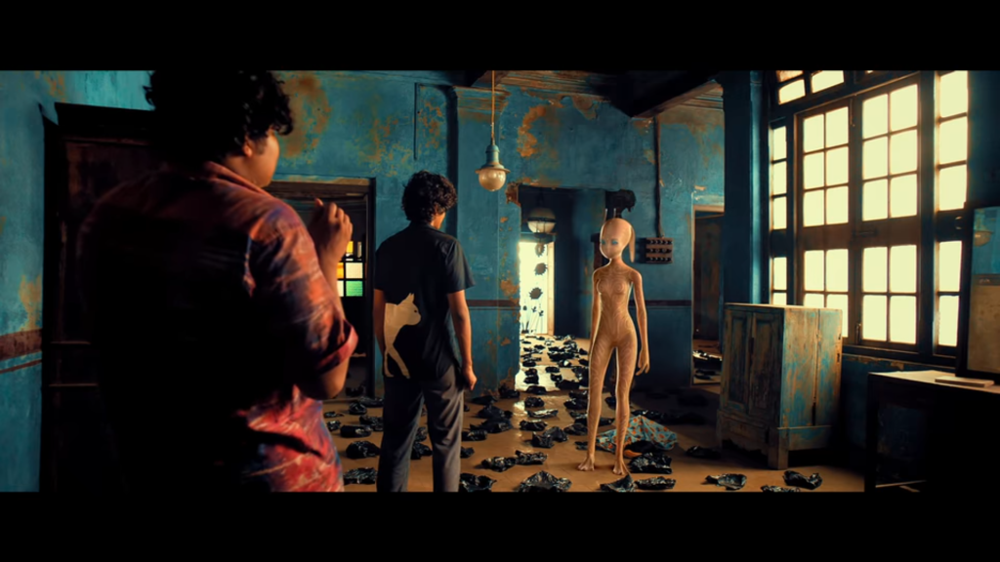

This day a year back a unique experience like never before took me by storm leaving me in complete silence for a long time. The experience provided by this particular film was so peculiar that ever since I have resisted myself from giving it a re-watch so that I don’t lose the specialty of the experience it provided. A film which is everything and is also nothing at the same time carrying deeply routed yet simple philosophies. So what’s the philosophy!?
Most of you would still remember that a Cat could be seen around Gaajii’s T-shirt. When he splits into two the halfs on both sides would join and appears as one. Wondered why? Me too and I thought of going behind that cat.
There is a popular theory of quantum physics called Schrodinger’s cat theory that questions the ‘reality’ that we believe in.Let me try and put it down in simple words.
It’s deals with a thought experiment with a cat, a radioactive substance and a toxin in a box. According to which at a point of time there is a possibility that the cat can exist both in a living and a dead state or one could say in multiple states just like Gaajii. And this theory was not just refered there for that Alien scene. The alien scene itself is an abstraction to show the entire thesis of the film.
Well let’s start from Butterfly effect each of the events happening is interlinked to each other. The happening of these events are in random. Just like how Manikkam was selected to become Shilpa and Dhanasegaran caught hold of Jesus statue to become Arputham. The only constant truth of this life is it’s unpredictability . It’s such a beauty that the screenplay of the film is also uncompromisingly written to be unpredictable. Adding the alien part was to strengthen it’s unpredictability.
The film also mocks at what we believe as truth and perfection. The society mocks at Shilpa for being imperfect, they are proud in dedicating their lives to god and praising him, they indulge in ego clashes , and they judge people bad based on their sexual life. When none of them know what is right or what is wrong what is perfect or imperfect. These are just based on the perceptions of majority. If people like Shilpa were majority we would have been the odd ones being suppressed.
You can’t say Thyagaraja’s alien concept unacceptable.Because here you are not supposed to chose who and what you accept. It has several points to make,one to make the film as unpredictable as life is, another one is to state you can’t just deny something just because it’s new and strange just like you deny Shilpa.
In a universe which is like ‘Schrodinger’s cat’ which doesn’t have any clarity on it’s reality we just create so much chaos based on our own perception when all we need to do is enjoy the possibilities and say ‘aaghaa’, that’s when I recall the trailer which gave away the philosophy even before the film! It referenced to a story from the Mahabaratha that says even in the hardest conditions man tends to seek pleasure and this film asks ‘why not?‘
Let me put it down in Tanglish to sound right.. ‘Adutha nodi ena nadakum nu theriyatha elavu vaalkaila ‘paambavathu pallamavathu… nu’ kedaikura santoshatha rasichu ‘aaghaa‘ nu sonna..life is Super Deluxe! ‘
For more such articles, refer to Carpe Diem.